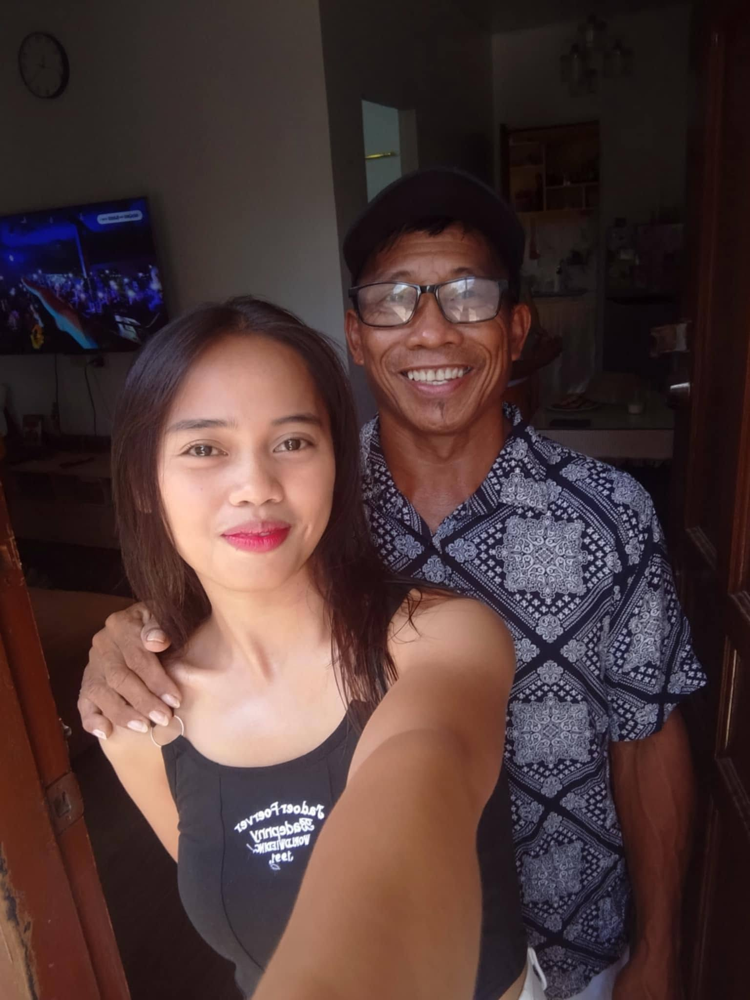

Portfolio
HOME

Future Web Developer
Feel free to explore my profile and learn more about me.
About Me



Hello! My name is Florie Jane Abon.
I am 22 years old and have been living in Caloocan City since 2021.
I was born on April 9, 2004, in Diit, Agutaya, Palawan.
I am the daughter of Amelia Abon and Florante Abon.
I grew up in Palawan, a beautiful place where seaweed farming is one of the main sources of livelihood for many families.
Growing up in this environment taught me the importance of hard work, perseverance, simplicity, and appreciation for nature.
My experiences in Palawan have shaped my values and helped me become the person I am today.
I continue to pursue my goals while carrying with me the lessons and values I learned from my family and my hometown.
My Skills
1. Created a resume using HTML

2. Created a list using HTML

3. Created a basic webpage with hyperlink and images using HTML

My Contacts
If you like to contact me, you can reach me through: